App Android para la estancia infantil La Oruga: la dirección organiza, la asistente registra y la familia lo ve.
TC2007B · Entrega final · 22 de octubre de 2026
Equipo: Oscar Olivares · Isabel Vaca · Carlos Arias
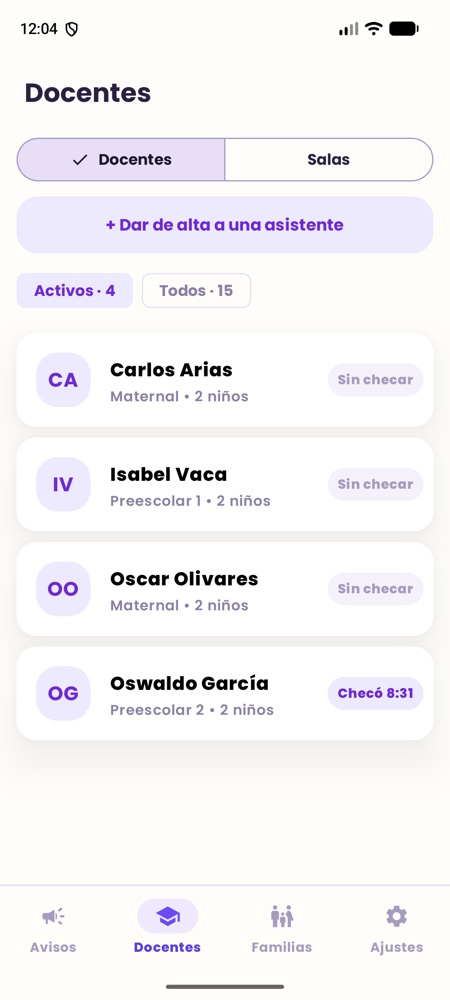
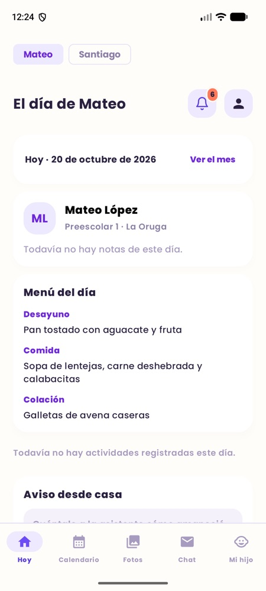
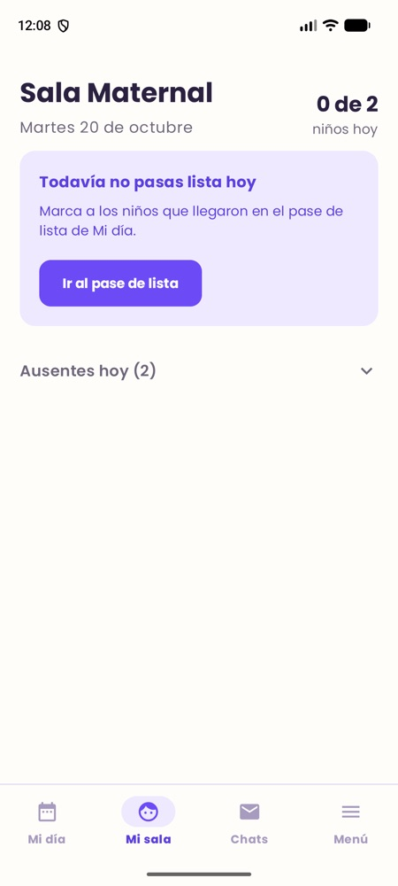
Problema y alcance2 min
Hoy el día de un niño se reparte entre libretas, hojas y WhatsApp
En una estancia infantil pasan muchas cosas en un día: quién llegó, qué comió, cuánto durmió, si se cayó en el patio, quién lo recogió. Casi nada de eso llega completo a la familia.
👩👧
La familia
No sabe si su hijo comió o durmió hasta que lo recoge. Pregunta por WhatsApp a un número personal de la asistente.
🧑🏫
La asistente
Pasa lista a mano, anota en papel y contesta a cada familia por separado mientras cuida a 10 niños.
🏫
La dirección
Lleva horarios, salas, cupos, menú y quién puede recoger a cada niño en hojas que nadie más ve.
🔒
Además son datos de menores: fotos, alergias, quién vive con quién. No pueden andar en chats personales ni en hojas sueltas.
Problema y alcance2 min
Una sola app, tres maneras de usarla
Cada persona entra con su cuenta y ve solo su parte: la dirección organiza el centro, la asistente registra el día de su sala y la familia ve el día de su hijo.
Requisitos del tablero: 32
19 completos8 parciales5 sin hacer≈ 72 %
Un solo APK. Después del login, la app pregunta GET /me quién eres y dibuja la app de tu rol; si tienes dos roles, eliges.
Al cambiar de rol o cerrar sesión se borra todo lo de la sesión anterior (cada sesión tiene su propio almacén de ViewModels y la navegación se reinicia).
Un requisito cuenta como completo solo si tiene evidencia: una prueba automática o una prueba en un teléfono.
DirecciónAsistenteFamilia
Problema y alcance2 min
Cómo está hecha, en un dibujo
El teléfono es la ventanilla; la API es quien atiende y revisa que tengas permiso; la base de datos es el archivo y el almacén es el álbum de fotos. Todo viaja cifrado.
El teléfono
App Android
Kotlin + Jetpack Compose + Material 3. Capas: pantallas → ViewModels → repositorios → dominio (reglas en Kotlin puro, con pruebas). Room guarda lo último que cargó.
HTTPS
La entrada
Túnel de Cloudflare
api.codeaapp.site Certificado HTTPS y HSTS. Expone el servidor sin abrir puertos.
El que atiende
API propia (FastAPI)
16 módulos, 84 rutas. Login con JWT, permisos por rol y por registro, bitácora de quién hizo qué. Corre en Docker.
El archivo
PostgreSQL (Aiven)
34 tablas, 13 migraciones.
El álbum
Almacén S3 (SeaweedFS)
Fotos con enlaces firmados que caducan.
Regla del proyecto: nada fuera del marco técnico del curso (startdroid). La única excepción, el túnel de Cloudflare, se aprobó y quedó registrada. Respaldo diario de la base y de las fotos.
Demo · Entrar a la app5 min de demo
Cada quien entra con su cuenta
La dirección da de alta a la persona y le manda por WhatsApp un código para activar su cuenta. Ella pone su contraseña y desde ahí entra con su correo.
Como la pulsera de un evento: sirve un rato, se cambia sola sin que te des cuenta, y si la dirección te da de baja deja de servir al momento.
JWT de 5 minutos + token de renovación que se rota en cada uso; si alguien reutiliza uno viejo, se cierran todas las sesiones de esa cuenta.
En el teléfono los tokens se guardan cifrados con Android Keystore (AES-GCM) en DataStore; un TokenAuthenticator los renueva solo.
Contraseñas con Argon2id, mínimo 9 caracteres. Códigos y tokens de renovación solo como hash SHA-256.
Freno a la fuerza bruta: 5 fallos por correo o 30 por IP en 15 min → 429.
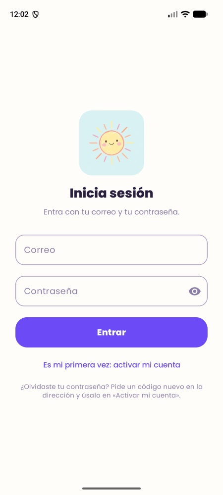
Demo5 min de demo
Rol 1 de 3
La dirección
Organiza el centro: su equipo, sus salas, sus familias y las reglas del día.
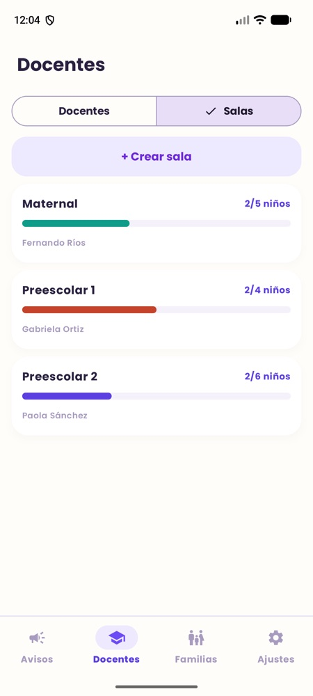
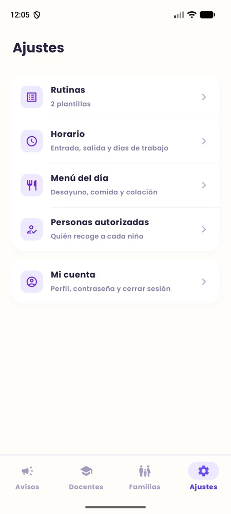
Demo · Dirección5 min de demo
Su equipo y sus salas, de un vistazo
Ve quién ya checó hoy y a qué hora, da de alta a una asistente y arma las salas con su cupo. Cada sala muestra cuántos niños tiene y quién es la asistente principal.
Permisos por rol (RBAC): cada ruta de la API dice qué rol la puede usar. Sin sesión responde 401, con el rol equivocado 403.
Las 77 rutas protegidas están en una matriz de roles generada del código, y una prueba automática comprueba cada celda.
La lista aparece al instante con lo último guardado en el teléfono (Room) y luego se actualiza con lo nuevo del servidor.
Docentes: quién checóSalas y cupo
Demo · Dirección5 min de demo
Inscribe niños y une a cada familia
Inscribe al niño, lo pone en una sala y le vincula a sus tutores. Una mamá puede tener dos hijos en salas distintas, y un niño puede tener a mamá, papá y abuela. Con un botón le manda a cada quien su invitación por WhatsApp.
Padre ↔ hijo es una relación muchos a muchos (parent_child_rel) con parentesco y tutor principal.
La invitación es un código de un solo uso que caduca. El enlace codea://invitar (o https verificado) abre «Activar mi cuenta» con el correo y el código ya puestos.
Altas, bajas, activaciones y logins quedan en una bitácora de auditoría a la que solo se le agrega; nunca guarda contraseñas ni tokens.
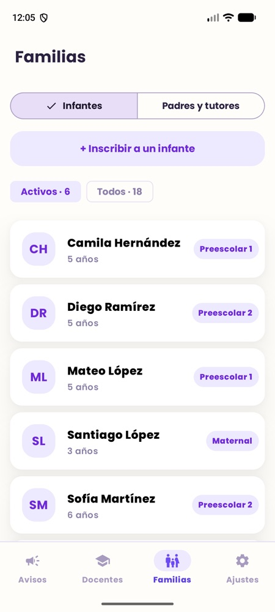
Infantes
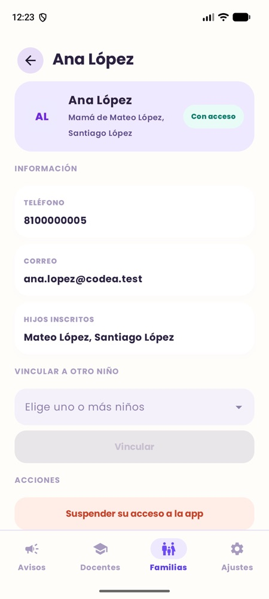
Ficha de una mamá
Demo · Dirección5 min de demo
Pone las reglas del día
El horario del centro, el menú de cada día de la semana, las rutinas de cada sala (desayuno, siesta, patio…) y quién puede recoger a cada niño.
Las reglas las aplica el servidor, no el teléfono: retardo contra la hora de entrada, cierre automático a las 21:00 de las entradas abiertas y sin checar en días no laborales.
La rutina del día se copia de la plantilla la primera vez que alguien la abre; cambiar la plantilla no altera los días pasados.
El menú lo leen la familia (en Hoy) y la asistente con la misma ruta.
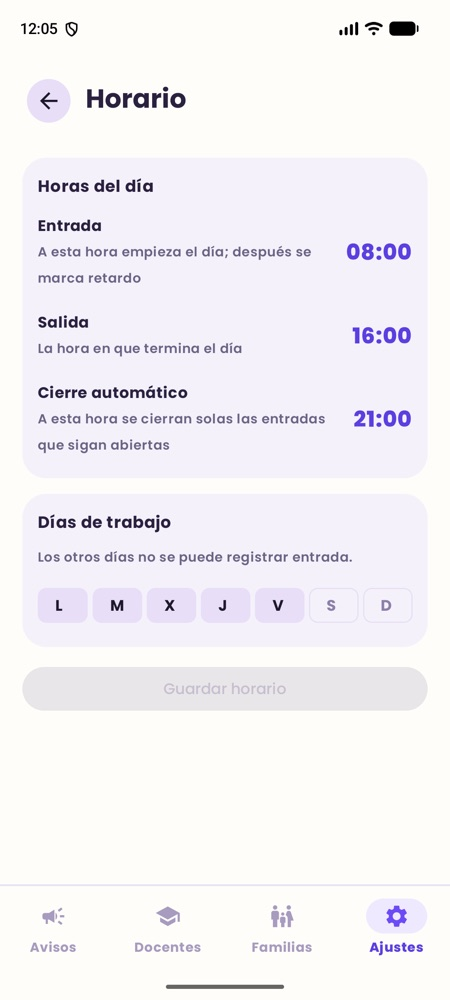
Horario
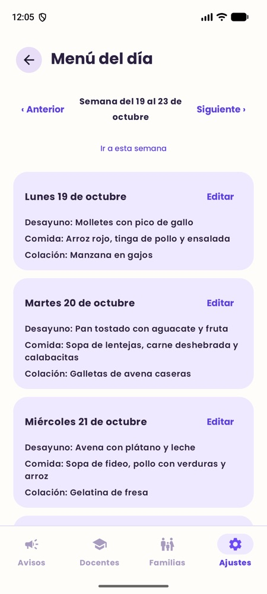
Menú del día
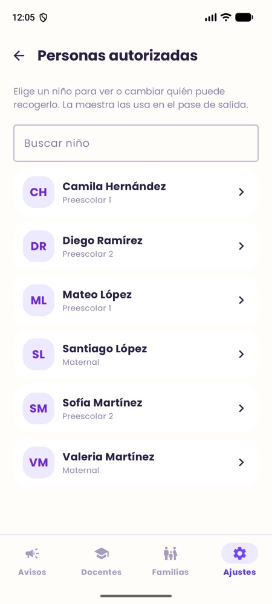
Quién recoge
Demo5 min de demo
Rol 2 de 3
La asistente
Registra el día de su sala sin soltar a los niños: checar, pasar lista, contar lo que pasó y entregar a cada niño.
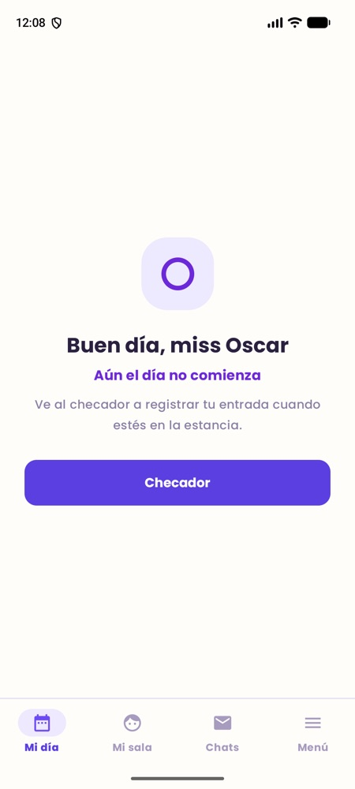
Demo · Asistente5 min de demo
El día empieza al checar
Un toque y queda su hora de entrada. Si llegó tarde se registra igual, marcado como retardo, y puede escribir el motivo. Al terminar el día checa su salida.
La hora la pone el servidor: cambiar el reloj del teléfono no sirve para adelantarse.
El retardo se calcula contra el horario que configuró la dirección. Si nadie registra la salida, el servidor la cierra a las 21:00 y la marca como automática.
Decisión ética: el checador no pide ubicación. Verificar con GPS implicaba vigilar a la trabajadora; preferimos no guardar ese dato (dilema 2).
Mi día, antes de checar
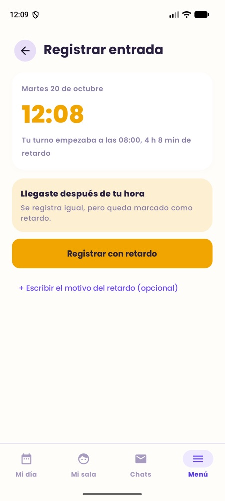
Checador con retardo
Demo · Asistente5 min de demo
Mi sala: lista, avisos de casa y chat
Pasa lista con un toque por niño. En la ficha de cada uno ve sus alergias, a quién llamar y quién puede recogerlo. Lo que la familia escribe desde casa le aparece arriba, y chatea con cada familia desde la app, no desde su WhatsApp.
Una sola regla en toda la API: sin registro = ausente.
El pase de lista funciona sin internet: la marca se guarda en una cola en Room y WorkManager la manda sola al volver la red (reintenta con espera creciente y junta marcas repetidas).
El chat pregunta cada 10 s solo por mensajes nuevos (?after=). Falta pasarlo a tiempo real con WebSocket o SSE.
Mi sala
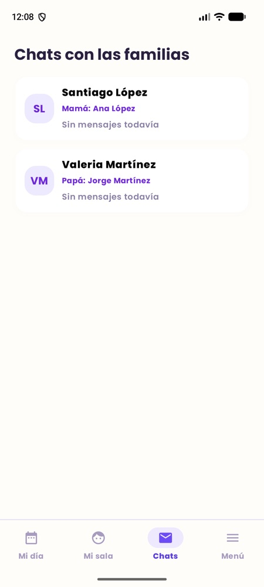
Chats con las familias
Demo · Asistente5 min de demo · en vivo
Durante el día: un solo recorrido guiado
Esta parte la mostramos en vivo en el teléfono. La app lleva a la asistente de un paso al siguiente: cuando termina uno, le dice qué sigue.
1
Rutina
Confirma cada momento: recepción, desayuno, actividad, siesta…
2
Reporte
Cuenta lo que pasó: por escrito, dictando con la voz o con una foto. Para uno o varios niños.
3
Resumen
Por niño: ánimo, cuánto comió, pañales y siesta.
4
Pase de salida
Quién lo recogió (un tutor o una persona autorizada) y a qué hora.
5
Finalizar día
Cierra la sala; la familia ya vio todo en su teléfono.
Un reporte para varios niños es muchos a muchos (report_child): cada familia lo ve y la API no deja incluir a un niño de otra sala.
Dictado con el reconocedor del propio Android (RecognizerIntent), sin librerías extra.
Foto: cámara (FileProvider) o galería (Photo Picker). Se comprime respetando EXIF antes de subirla en multipart.
La foto va al almacén S3 y solo se entrega con un enlace firmado que caduca, a las familias de los niños etiquetados.
Demo5 min de demo
Rol 3 de 3
La familia
Abre la app y ve el día de su hijo, sin tener que preguntar.
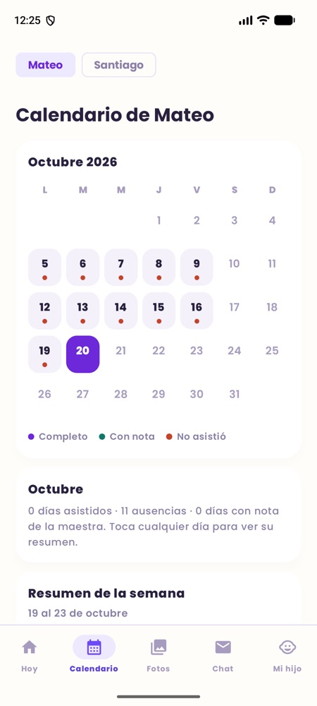
Demo · Familia5 min de demo
Hoy: el día de su hijo en una pantalla
Hora de entrada, lo que hizo, lo que comió y quién lo recogió. Con dos hijos, cambia con la tira de arriba. Puede dejarle un aviso a la asistente («hoy durmió mal»). Se ve bien también en modo oscuro.
Una sola llamada, GET /children/{id}/day, arma toda la pantalla.
Anti-IDOR: si una mamá pide el día de un niño que no es suyo, la API responde 404; ni siquiera confirma que existe. Hay pruebas automáticas para familia, asistente, chat y fotos.
Colores del tema de Material 3: el modo oscuro sale del mismo diseño, sin pantallas duplicadas.
Hoy
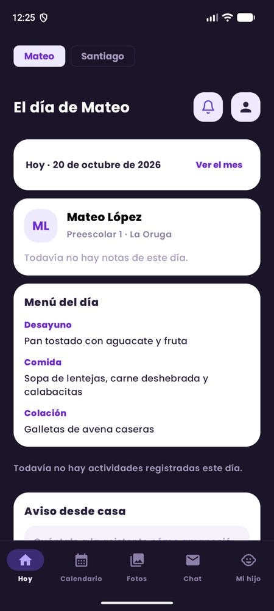
Modo oscuro
Demo · Familia5 min de demo
El mes, la semana y lo que la escuela debe saber
El calendario marca qué días fue y cuáles tienen nota; abajo viene el resumen de la semana. En «Mi hijo», la familia escribe alergias y cuidados, y la asistente los ve en la ficha del niño.
GET /children/{id}/weekly-summary junta en el servidor la asistencia, el ánimo, la comida, la siesta y los logros de la semana (6 pruebas).
La salud la edita la familia con PATCH /children/{id}/health y la lee la asistente: una sola fuente de verdad, sin copiar datos.
Chat con la sala por niño: la familia escribe y manda fotos desde la cámara o la galería.
Calendario
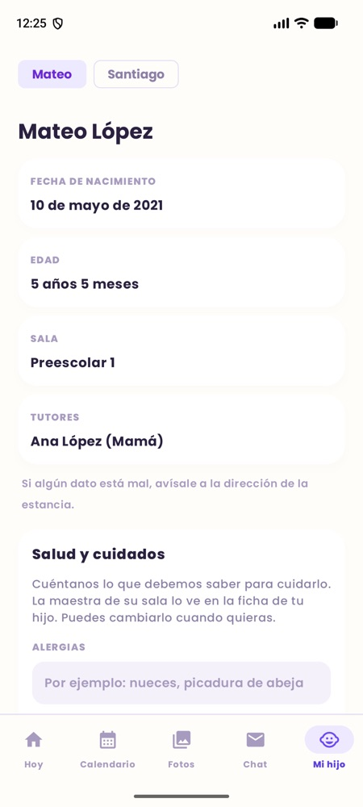
Mi hijo
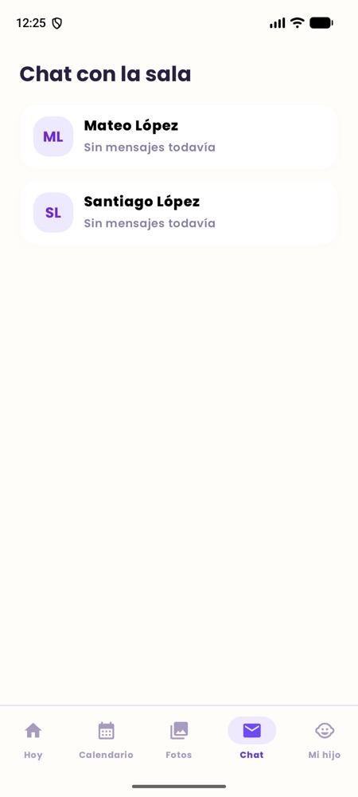
Chat con la sala
Demo · Los tres roles5 min de demo
Sin señal, la app no se queda en blanco
En una estancia el wifi falla. Sin internet, la app muestra lo último que cargó y avisa que no pudo conectarse. El pase de lista se guarda y se manda solo cuando vuelve la red.
Caché de lectura: la tabla cached_response en Room guarda la última respuesta de cada pantalla de los tres roles. Se muestra primero y se reemplaza al llegar lo nuevo. Se borra al cerrar sesión.
Cola de escritura (solo asistencia): Room + WorkManager, que corre únicamente con red y deja que Android decida cuándo, para no gastar batería.
Límite: reportes, fotos, chat, checador y pase de salida todavía necesitan conexión. La base local del teléfono no está cifrada.
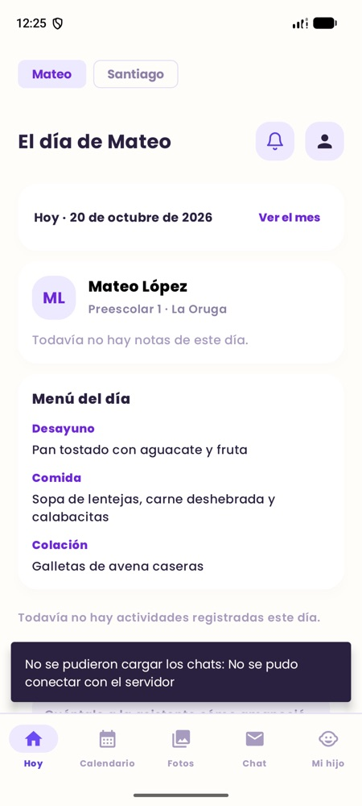
Sin red: lo último guardado
Pruebas y matriz2 min
¿Cómo sabemos que funciona?
Con pruebas automáticas que se corren antes de cada cambio, y recorriendo la app en teléfonos reales para buscar fallas.
343
pruebas de la API (pytest) contra un Postgres real, todas en verde
140
pruebas de la app (JUnit) de las reglas del día, la sesión y los textos
77
rutas en la matriz de roles; cada celda se comprueba con una prueba
17
fallas encontradas en recorridos en teléfono y corregidas
Pruebas que prueban a las pruebas
Mutación: rompimos a propósito la regla que decide qué niños ve cada familia (can_see_child) y 5 pruebas fallaron. Si nadie hubiera fallado, las pruebas no servían.
Matriz de trazabilidad
Cada requisito tiene ID, criterio de aceptación, evidencia (prueba o recorrido), resultado y estado. Un requisito no se marca hecho solo porque el código exista.
Sesión de la app probada con un servidor falso (mockwebserver3): login, renovación y token vencido.
Falta: pruebas de interfaz con Compose UI Test (hoy solo hay una prueba instrumentada).
Seguridad2 min
Son datos de niños: la seguridad va en cada capa
🔑 Sesiones
JWT de 5 min, renovación rotada con detección de reuso, tokens cifrados con Keystore. Dar de baja corta el acceso en la siguiente petición.
🚪 Permisos
Por rol (401 / 403) y por registro: lo que no es tuyo responde 404. Matriz de 77 rutas comprobada.
💉 Inyección
Todas las consultas con el ORM (SQLAlchemy), parametrizadas. Pruebas de inyección en login, filtros y texto guardado.
🧱 Fuerza bruta
Límite de intentos por correo y por IP en login y activación, con 429 y tiempo de espera.
🔒 Transporte
HTTPS con HSTS, cabeceras de seguridad (CSP, nosniff, X-Frame-Options), CORS cerrado. HTTP sin cifrar solo en desarrollo.
🗝️ Secretos
Llaves de la base, del almacén, del túnel y de JWT solo en el servidor (.env.prod), fuera del repositorio.
Pendiente y lo decimos: el escaneo dinámico con OWASP ZAP, cifrar la base local del teléfono y cambiar los valores de ejemplo de .env.example.
Capacidad diferenciadora1 min
Lo que nos hace distintos
🧭
El día guiado de la asistente
De checar a «Finalizar día» en un solo recorrido: la app dice qué sigue. Pensado para alguien con 10 niños alrededor y una mano libre, con dictado por voz.
📶
Sigue sirviendo sin señal
Pase de lista sin internet que se manda solo y pantallas que muestran lo último guardado en los tres roles.
🖐️
La familia controla las fotos
Si sale su hijo, puede borrar la foto al momento, del almacén y de todas las galerías, sin pedir permiso a nadie.
Todo con lo que enseña el curso (Compose, Room, WorkManager, Retrofit, FastAPI, Postgres): sin Firebase ni servicios de Google para el funcionamiento central.
Documentación, implantación y ética3 min
Cómo se pone en marcha (y cómo se regresa)
Hoy en producción
API, almacén y túnel en Docker Compose; base en Aiven (Postgres 18). Pública en api.codeaapp.site desde el 19/oct.
Respaldos
Diarios a las 3:00 de la base y de las fotos, se guardan 14 días. Restauración probada.
Orden de despliegue
Primero la API, después el APK. Antes de migrar, respaldo manual. Rollback: imagen anterior + alembic downgrade o restaurar el respaldo.
Lo que aprendimos
El 19/oct un script de datos de prueba se corrió contra producción y borró cuentas y fotos. No había respaldo. Por eso existen hoy.
Documentación entregada
Manual de usuario y de instalación
Plan de implantación (canal, versión, configuración, migración, rollback)
Riesgo abierto: todo corre en una sola Mac (si se duerme, nadie entra) y no hay monitoreo, así que no podemos medir el 99 % de disponibilidad. Falta también el APK de release firmado.
Documentación, implantación y ética3 min
Decisiones éticas que tomamos
📍 ¿Ubicación de la asistente al checar?
Probaría que está en la estancia, pero es vigilar a una trabajadora. Decidimos no guardar ubicación: el registro prueba la hora, no el lugar.
📷 ¿Quién decide sobre una foto?
La familia que sale en ella la puede borrar al momento. Si salen otros niños, también se borra para sus familias: pesa más quien no quiere aparecer.
💬 ¿Puede la dirección leer los chats?
Hoy no: la API se lo impide. Si un día hace falta por una queja grave: motivo por escrito, dos personas que autorizan, registro y aviso a los involucrados.
👥 Reportes de grupo
Un reporte de varios niños lo leen todas sus familias. «Mateo mordió a Sofía» expone a dos niños. Proponemos no nombrar a otros niños (falta un aviso en la pantalla del reporte).
Cada criterio ético se escribió como requisito verificable (consentimiento, minimización, acceso, retención) y la clasificación de datos dice, por campo, nivel de sensibilidad, dónde vive, cómo se protege y cuánto se guarda.
Cierre
Lo que falta, dicho sin rodeos
Sin hacer
Bitácora de pagos (decidimos no hacerla)
Desbloqueo con huella
Imprimir reportes para coordinación
Aviso de llegada de los padres
Medir el 99 % de disponibilidad (monitoreo)
Para cerrar
APK de release firmado
Escaneo OWASP ZAP
Chat en tiempo real (WebSocket o SSE)
Escribir reportes y fotos sin conexión
Migrar el estado a StateFlow e inyección con Hilt
Gracias
¿Preguntas?
API pública: api.codeaapp.site · Repositorio: github.com/IsabelVaca/Codea_app